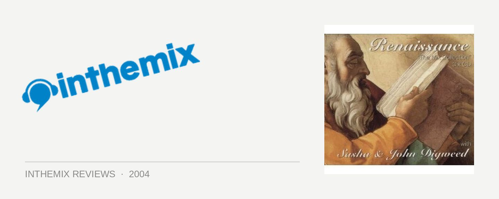

Various Artists - Sasha & John Digweed: Renaissance, The Mix Collection Vol 1 (10th Anniversary Edition)
(Renaissance/Stomp)
This is the big one baby. When it was initially released back in 1994, Renaissance: The Mix Collection left a serious impact in its wake – it was the first club-based mix album to achieve Gold status in the UK, and went on to sell over 100,000 copies within the first six weeks of release. Compiled by musical partners Sasha and John Digweed, two of dance music’s most successful and enduring icons, Renaissance: The Mix Collection is widely considered to be the grand-daddy of all mix CDs. While the compilation has been out of print for the last seven years, those still wet behind the ears with an interest in dance music can see what all the fuss was about – Renaissance: The Mix Collection is about to be unleashed once again with fresh artwork, brand new sleeve notes and a full pre-master overhaul of the same classic music. So let’s go back to were it all began…
For fans of the progressive house that is played in the clubs today, listening to Renaissance: The Mix Collection is quite interesting to say the least. While the progressive released around the 1998-99 period still manages to sound incredible when placed alongside the music produced since, here it is a slightly different story. At first, it’s hard to get past the fact that Renaissance: The Mix Collection does sound very dated: it’s almost startling to note how far production techniques developed between this and the last mix CD that Sasha and Digweed did together, with 2000’s deeply progressive Communicate. But if you manage to get beyond this initial hump – and the fact that it sounds so very different to what we’re listening to today – what you’ll find is music that still manages to evoke soaring emotions of grandeur: feelings that have no trouble standing alongside the luscious Renaissance-era artwork that adorns the compilation. The selections on Renaissance: The Mix Collection possess real soul which have endured the years, and as a testament to the enduring legacy of Sasha and Digweed’s reputation as unparalleled masters of their chosen art form, it’s amazing to hear how immaculately crafted the album remains.
The first CD starts off on a pensive and brooding note, with several different mixes of Leftfield’s seminal classic Song of Life played in succession. But this is the calm before the storm, foreshadowing the open thunder that is later to emerge – which begins with an appearance by Digweed’s own seminal club classic, For What You Dream Of. Compared to the slow subtlety of contemporary progressive, Renaissance: The Mix Collection is full of big diva vocals and big piano hooks. A song like Sunscream’s Perfect Motion is a perfect example of how much more of a place catchy vocals had in club songs back then, and is seriously refreshing in this age of plodding basslines and deep tribal percussion. But almost frustratingly it refuses to allow itself to be knuckled down into a single category or identifiable sound – instead it certifiably roars through whole range of different club sounds, with the only identifiable element across the board being the fact that they all sound absolutely right and perfect in their place in the mix.
Sasha and Digweed rise and drop the tempo of the mix in a subtle but masterful fashion over the 70 minutes, and once it gets into gear it really pumps along at a steady pace. They finally let the listener have it with F. Machine’s Child Bride - this is bangin’, big room stuff, or at least it was for the time. It is at its roots house music, but house music that has been injected with all of the magnificent substance that have made Sasha and Digweed so successful for so many years. It shows that progressive’s reputation for gradually building a set was well in place even back then, and it passes the test that so few DJ sets are even able to qualify for – the mixing is so subtle and clever that you barely notice it moving from track to track. But more importantly, it takes you back to a golden hey-day of dance music when everything was surrounded by a hum of excitement, and the music was rife with creativity. It was a time when DJs like Sasha and Digweed were certainly well placed to craft unforgettable larger-than-life dancefloor moments, and earn the god-like adoration they received from their fans.
The remaining two CDs are in much the same vein as the first – while they confuse a little on the first few listens, they have the potential to stun and amaze on each consecutive listen after that. While the second CD is the quirkiest of the bunch and the one that people will have the most trouble wrapping their heads around, the third is a deeper affair with a lot more in common with the progressive house that is popular today. Comprised of 75 minutes of brooding but beautiful progressive trance, it is here that recent followers of Sasha and Digweed will most easily relate. It pulls down deep with slow and deliberate house beats driving the layers of synthesized melody, lifting the vibe a little to take in a traditional progressive trance chorus, before skyrocketing up the energy for something as joyfully uplifting as EMF’s They’re Here or the pumping club sounds of Solar Plexus. It flows and crescendos as only the most immaculately composed progressive sets do, carrying the listener along through a whole range of rich emotions. When viewed as beautiful and hypnotic retro trance, the CD holds its ground very well and you’re left with a mix that is every bit as stunning as any of the later Northern Exposure compilations.
It’s hard to avoid the fact that clubbers certainly aren’t going to find Renaissance: The Mix Collection as accessible or as compulsively listenable as it was 10 years ago. The CD certainly drags it’s heels at first, and many will no doubt be left scratching their heads upon the first few listens – which belies the fact that dance does date a lot faster than any other form of music. But this can hardly be called a criticism: what opens up after a few listens is an uncompromisingly beautiful piece of music that has transcended the time that has passed since its original release, and will easily last another ten years into the future. It’s sublime music, and it effortlessly choreographs an epic, stunningly grandiose and unforgettable feel, which allows you to see that, even back then, an incredible amount of consideration was being given by Sasha and Digweed on how to best construct a DJ journey. While it will take many time to wrap their ears around the older sounds, the breadth of vision and incredibly eclectic collection of sounds found on Renaissance: The Mix Collection makes it well worth the effort, particularly for those wanting a look at a pivotal moment in the history of dance music. It’s a release that has been rendered timeless: how many other compilations released in the last 10 years have left that same legacy? A decade has passed and the music has moved on, but Renaissance: The Mix Collection holds onto its status as one of the greatest mix albums of all time.